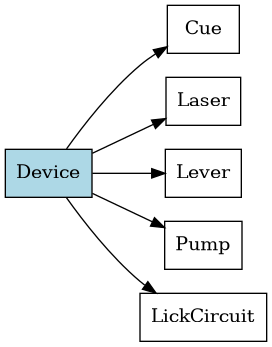

Introduction
Welcome to the documentation for my operant conditioning projects, developed by Josh Boquiren (@thejoshbq on GitHub) as part of the Otis Lab. These projects are designed for Arduino-based behavioral experiments, integrating levers, pumps, lasers, and more.
"Unless the Lord builds the house, those who build it labor in vain. Unless the Lord watches over the city, the watchman stays awake in vain." - Psalm 127:1
Projects Overview
This documentation combines four distinct projects:
- Operant FR: A fixed interval task where the number of lever presses required for a reward is set and does not change. See the Operant FR Project page or the operant_FR namespace for details.
- Omission: A contingency-based task where rewards are withheld based on specific conditions. See the Omission Project page or the omission namespace for details.
- Operant PR: A progressive ratio task where the number of lever presses required for a reward increases. See the Operant PR Project page or the operant_PR namespace for details.
- Operant VI: A variable interval task where rewards are available once randomly within each interval. See the Operant VI Project page or the operant_VI namespace for details.
- Warning
- All projects are in testing and not fully verified.
Project Structure
Each project includes:
Architecture Diagram
Below is a simplified diagram of the class hierarchy shared across projects:

Using This Documentation
- Use the Classes tab to explore shared hardware components.
- Use the Files tab to view source code and comments.
- Use the Namespaces tab to separate each project’s context.
- Visit the project-specific pages linked above for detailed overviews.
 1.9.8
1.9.8